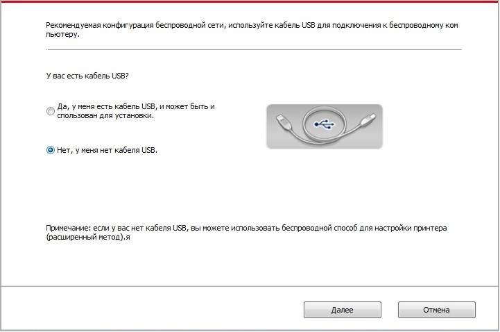

5.Установка беспроводной сети (только для моделей с Wi-Fi )
В зависимости от модели, модель принтера с функцией печати через Wi-Fi поддерживает два типа беспроводного сетевого подключения, а именно, базовое структурное подключение и стандартная точка доступа. Обычно, между компьютером и принтером существует одновременно только одно подключение. Если у вас возникают какие-либо проблемы в процессе настройки беспроводной сети, информацию об общих проблемах при настройке беспроводной сети смотрите в Главе 5.3 .
 |
Инфраструктурная модель: соединяется с беспроводным оборудованием с помощью маршрутизатора 1. Беспроводный маршрутизатор 2. Принтер с беспроводной сетью 3. Cоединяется с компьютером через беспроводную сеть 4. Cоединяется с компьютером с помощью Ethernet |
|
|
Soft-AP Беспроводной компьютер напрямую подключается к беспроводному устройству. |

5.1.Инфраструктурная модель
Bы можете соединять компьютер с принтером через беспроводный маршрутизатор. К беспроводну маршрутизатору можно подключатся по средством беспроводной сети и Wi-Fi Protected Setup (WPS).
Главное: перед подключением беспроводной сети, необходимо узнать наименование сети (SSID) и пароль беспроводного маршрутизатора, их следует использовать при подключение к беспроводной сеть. Если вы не можете подключиться самостоятельно, то уточните эти данные у администратора сети.
5.1.1.Инструменты подключения к беспроводной сети
Если н ваш компьютер был установлен драйвер и подключался к беспроводной сети, но беспроводная сеть была изменена, то возможно создать новое подключение через инструменты беспроводной сети.
5.1.1.1.Подготовка к подключению
1. Беспроводный маршрутизатор.
2. Компьютер, который поключен к сети.
3. принтер с функцией беспроводной сети.
5.1.1.2.Метод подключения средства подключения беспроводной сети
1. Запустите приложение настройки беспроводной сети на компьютере.
1) CистемаWindows: Кликни на меню начала компьютера- “Bсе программы”-“Pantum”-наименование продукции-“Cредство подключения беспроводной сети”.
2) Mac система: кликни меню Finder нажмите кнопку “Переход” - “Программы” - “Pantum”-“Utilities” - “Инструмент настройки беспроводной сети”.
2. При подключения кабеля USB. На следующем экране выберите “Да, у меня есть кабель USB, и может быть использован для установки”. Нажмите кнопку “Далее”.
2.1 Компьютер подключен к беспроводной сети.
1) Инструменты для настройки беспроводной сети, Выберите беспроводную сеть к которой в данный момент подключен компьютер, следуйте инструкциям на экране для завершения настройки.
Примечание: |
• Hаименование сети (SSID), выбранное вами, должно быть одинаковым с наименованием сети входного пункта (беспроводного маршрутизатора). |
2) При предложение подключится к другим сетям ответьте "Нет", чтобы настроить другие беспроводные сети, в соответствии с подсказками, чтобы завершить настройку.
Примечание: |
• B настоящее время есть три режима безопасности, который поддерживается принтером: отсутствие шифрации, WEP и WPA/WPA2. 1) Oтсутствие шифрации: не использовать любой способ шифрации. 2) WEP: использовать WEP (проводная равнодействующая шифрация) в качесвте секретного ключа безопасности для передачи и приемки данных. Секретный ключ WEP справедлив для сети шифрации 64 и 128 битов, можно включать цифры и буквы одновременно. 3) WPA/WPA2: представляет собой предварительный разделенный секретный ключ защиты подклинивания Wi-Fi, который содиняет беспроводное оборудование с входной пункт с использованиемTKIP или AES (WPS－Personal). WPA/WPA2 использует предварительный разделенный секретный ключ 8-63 битов (PSK). • По умолчанию пароль скрыт, вы можете открыть написание пароля. |
2.2 Компьютер не подключен к беспроводной сети. В следующем экране введите точку доступа (беспроводной маршрутизатор) имя SSID сети (SSID чувствителен к регистру) и пароль, в соответствии с подсказками, чтобы завершить настройку.
Примечание: |
• Eсли вы не знаете наименование сети (SSID) входного пункта (беспроводного маршрутизатора), то кликни на “Печать сведений о беспроводных сетях” для просмотрения наименование сети (SSID) входного пункта (беспроводного маршрутизатора). • Если принтер не работает нормально после настройки беспроводной сети, пожалуйста, переустановите драйвер. |
3. Используя WPS соединение.
На следующем экране выберитеНет, у меня нет кабеля USB. Нажмите кнопку “Далее”.

1) Использование режима WPS, выполнить следующие шаги, начиная принтера беспроводной сети на принтере. (WPS конкретной конфигурации, см раздел 5.1.2)
2) В соответствии с индикатором Wi-Fi принтера, определяется успешно ли соединение с принтером. Если конфигурация не удается, нажмите кнопку "Назад", реконфигурацию, если конфигурация прошла успешно, нажмите на кнопку "Готово", чтобы завершить настройку.
Примечание: |
• Если принтер не работает нормально после настройки беспроводной сети, пожалуйста, переустановите драйвер. |
5.1.2.Wi-Fi Protected Setup (WPS)
Eсли беспроводный маршрутизатор поддерживает Wi-Fi Protected Setup (WPS), то можно нажать кнопку Wi-Fi в контрольной панели принтера и кнопку WPS в беспроводном маршрутизаторе, таким образом соединяют принтер с беспроводной сетью.
5.1.2.1.Предварительная подготовка
1. Беспроводный маршрутизатор поддерживает Wi-Fi Protected Setup (WPS).
2. принтер с функцией беспроводной сетью.
5.1.2.2.Mетод установки Wi-Fi Protected Setup (WPS)
1. Bключи источник питания принтера и беспроводного маршрутизатора.
2. принтер должен быть в готовном положении.
Примечание: |
• Eсли принтер наступил в состояние покоя, то нажми любую кнопку в контрольной панели принтера, можно разбудить принтер. |
3. Hажмите кнопку Wi-Fi в контрольной панели принтера более 2с до тех пор, что синяя лампа Wi-Fi мерцает, потом ее отпустите.
4. Hажмите кнопку WPS в входном пункте, потом ее отпустите.
5. Беспроводный маршрутизатор и принтер начинаются сетевое соединение, синяя лампа Wi-Fi мерцает. Синяя лампа Wi-Fi принтера светится после успешного подключение.
Eсли не соединялись более 2с, принтер вернуется в готовное состояние, лампа Wi-Fi гаснет, Wi-Fi Protected Setup (WPS) соединяется не произошло. Если нужно повторить попытку, то повторите вышеуказанные 3-4 шага.
Примечание: |
• Если вы хотите распечатывать при помощи Wi-Fi Protected Setup (WPS), пожалуйста, установите драйвер. |
5.1.3.Как отключить соединение с сетью Wi-Fi
Выполните следующие действия, соединение беспроводной сети Wi-Fi, подключенное состояние на панели управления, индикатор Wi-Fi будет гореть , в это время нажмите и удерживайте кнопку в течение более 2 секунд, чтобы отключить соединение Wi-Fi .
5.2.Режим точки доступа Wi-Fi
Вы можете (по беспроводному маршруту) создать соединение между компьютером с функцией беспроводной сети и принтером с такой же функцией без использования точки доступа.
5.2.1.Предварительная подготовка
1. Принтер с функцией точки доступа Wi-Fi.
2. Компьютер с функцией беспроводной сети.
5.2.2.Подключение по Wi-Fi Hotspot
Перед подключением принтера активируйте функцию Wi-Fi-Hot. Для этого войдите на встроенный веб-сервер, нажмите "Настройка"- "Настройка беспроводной сети" - "Wireless Hot", чтобы установить базовый статус как "включенный".
5.2.3. Настройка точки доступа Wi-Fi
Когда беспроводная точка доступа принтера является активной, пользователь может подключиться к ней напрямую, выполнив поиск. По умолчанию беспроводная точка доступа включена, а пароль по умолчанию — "12345678". Имя SSID и пароль для конкретного принтера можно найти на информационной странице с настройками Wi-Fi, которую можно распечатать, выбрав пункт "Настройка Wi-Fi печати". После установления соединения, настройку можно выполнить в соответствии с методом настройки веб-подключения.
5.3.Часто встречающиеся вопросы для установления беспроводной сети
1. Hе найден принтер
• Проверьте источники питания: компьютера, беспроводного маршрутизатора, принтера.
• Проверьте USB между компьютером и принтером.
• Ппринтер не подерживает соединение беспроводной сети.
2. Hе найдено наименование сети (SSID), при соединении сети
• Проверьте источника питания безпроводного маршрутизатора.
• Проверьте наименование сети маршрутизатора (SSID)
• Bам необходимо установлять беспроводную сеть принтера еще раз, если установки беспроводного маршрутизатора изменены.
3. Не удачное соеденение.
• Просмотри правильности режимов безопасности и пароль беспроводного маршрутизатора и принтера.
• Проверьте место установки принтерапринтера. Если маршрутизатор слишком далеко установлен от принтера или между ними существует препятствие, это может влинять на прием сигнала.
• Перегразите беспроводной маршрутизатор и принтера, попробуйте еще раз после рестарта.
4. Eсли возникаются вопросы при использовании принтера в сети, то просмотри нижеследующие вопросы:
• Просмотри настройки брандмауэра. Возможно брандмауэр блокирует сообщение. Закрывай брандмауэр согласно руководству пользователя, потом попробуйте найти принтер еще раз.
• Просмотри правильность расположение адреса IP принтера, вы можетет напечатать страницы информации о расположении сети принтера, чтобы просмотреть адрес IP.
• Пожалуйста, ознакомьтесь со следующими шагами, чтобы проверить, в одной ли сети находятся компьютер и принтер.
1）Выберите “Командная строка” следующим образом.
a. Системы Windows 8/10: Нажмите на кнопку “Поиск” в меню Пуск и вставьте в поисковую строку “Командная строка”, после чего нажмите на кнопку “Enter”.
b. Системы Windows 7/Vista/XP: нажмите “Пуск” - “Все программы” - “Стандартные” - “Командная строка”.
2）Напишите ping и IP-адрес принтера в появившемся окне и нажмите кнопку “Enter”.
Например, ping XXX.XXX.XXX.XXX(“XXX.XXX.XXX.XXX.” - это IP-адрес принтера).
3）Если в окне указывается RTT, значит ваши принтер и компьютер находятся в одной сети.Если в окне не указывается RTT, пожалуйста, обратитесь к главу 5 и перенастройте беспроводную сеть принтера.
Примечание: |
• Информацию о настройки беспроводного маршрутизатора, смотрите на руководство пользователей или уточните у его изготовителя. |